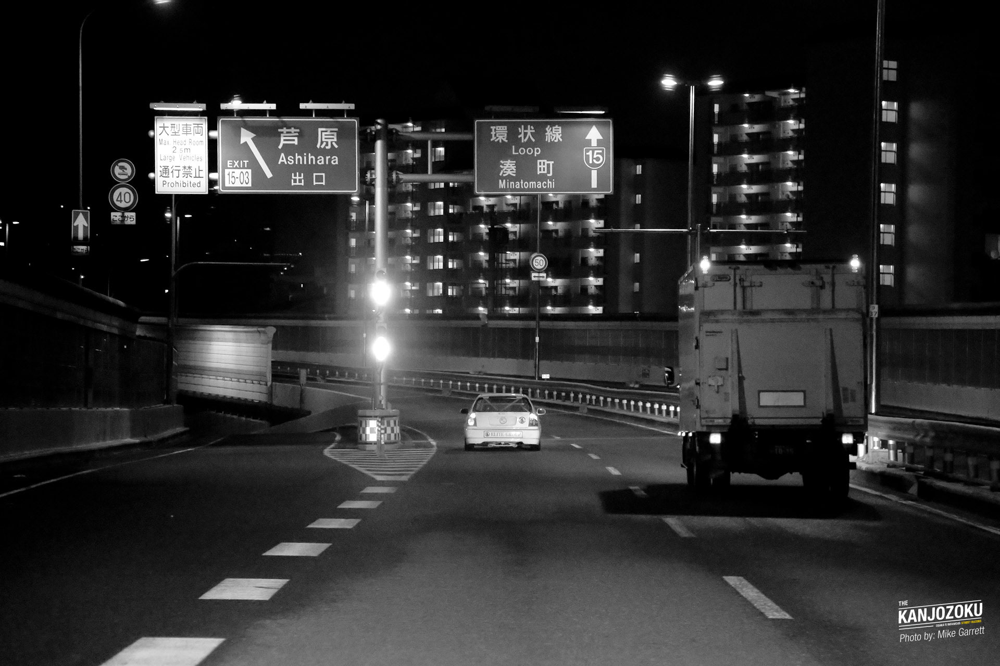
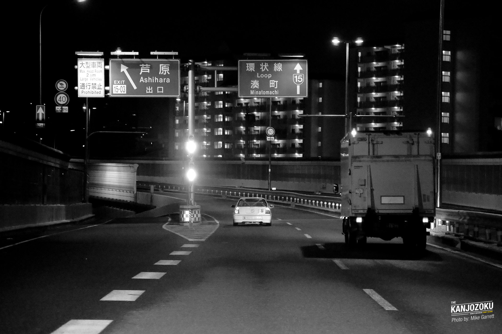

History
The roots of the Kanjōzoku (カンジョ族) can be traced back to the late
1980s, during a time when Japan's street racing scene was exploding in
popularity. Inspired by motorsports, underground racing groups began
forming across the country — but Osaka's Kanjōzoku stood out.
Unlike the touge racers of mountain passes or the flashy street crews
of Tokyo, the Kanjōzoku chose the Hanshin Expressway's Loop Line
(環状線 - Kanjō-sen) as their battleground.
Throughout the
1990s and early 2000s, the Loop became infamous for midnight races and
daring police evasions. Modified Honda Civics, known for their agility
and front-wheel-drive stability, were the weapon of choice. These cars
often had gutted interiors, custom-built engines, and bold graphics —
not for show, but to survive the intensity of high-speed loop runs.
As law enforcement increased surveillance and penalties,
many Kanjō racers faded into obscurity or took their passion to the
track. But some crews adapted, becoming even more secretive — racing
at odd hours, using masks and fake plates, and avoiding online
attention. This period marked the transition from open rebellion to
underground legend.
 


.jpeg)
.jpeg)
.jpeg)